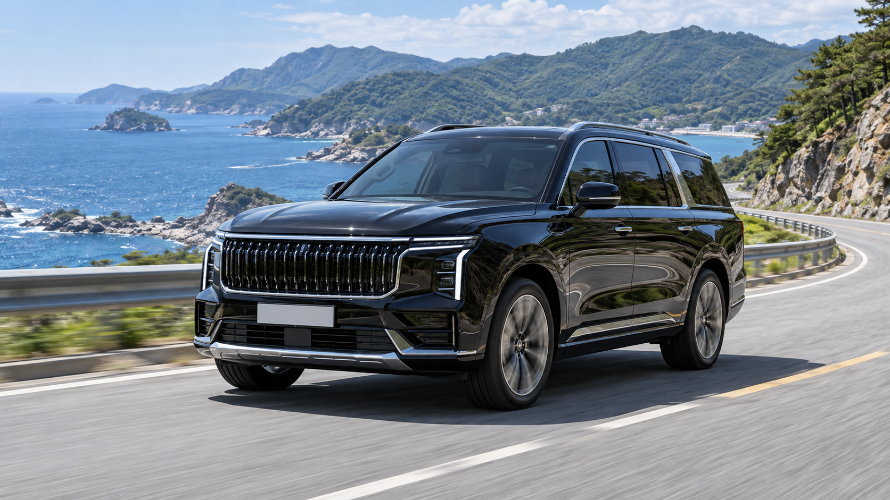
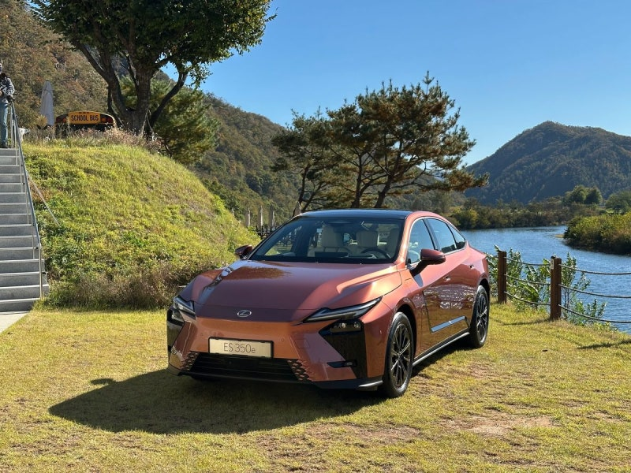
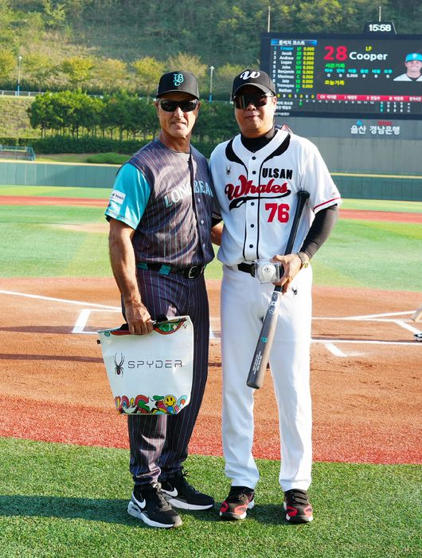

오늘의 화제길 위에서 발견한 자동차 이야기,
길 위에서 발견한 자동차 이야기,
회원들이 직접 전합니다
여행, 정비, 신차까지 지금 가장 뜨거운 이야기를 한눈에.

여행, 정비, 신차까지 지금 가장 뜨거운 이야기를 한눈에.



실제 연비와 승차감, 주차 편의성을 정리했습니다 · 12분 전
오늘 하루도 모두 수고하셨습니다 · 18분 전

용도와 예산을 적어두었습니다 · 24분 전

혼동하기 쉬운 부분을 그림과 함께 봅니다 · 31분 전

준비물보다 중요한 건 역시 마음가짐 · 42분 전
 모터쇼 현장 스케치
모터쇼 현장 스케치 바이크와 떠난 해안길
바이크와 떠난 해안길 현장에서 만난 프로의 차
현장에서 만난 프로의 차 거대한 장비의 정교한 움직임
거대한 장비의 정교한 움직임 오늘의 작업 현장
오늘의 작업 현장